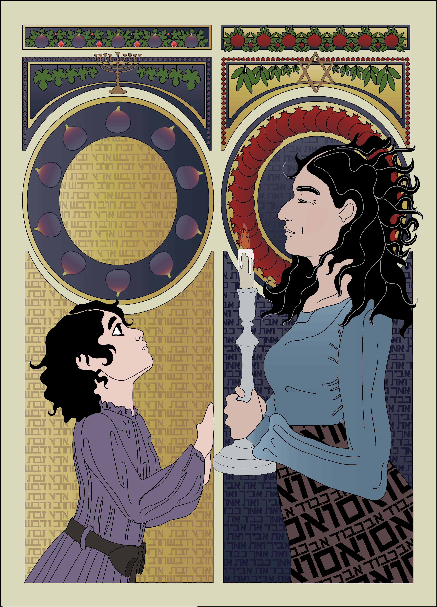
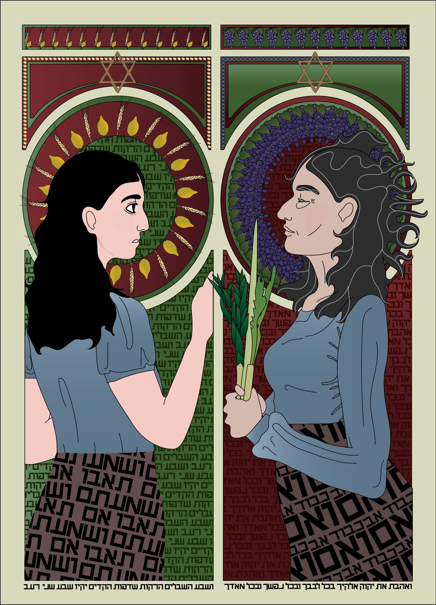
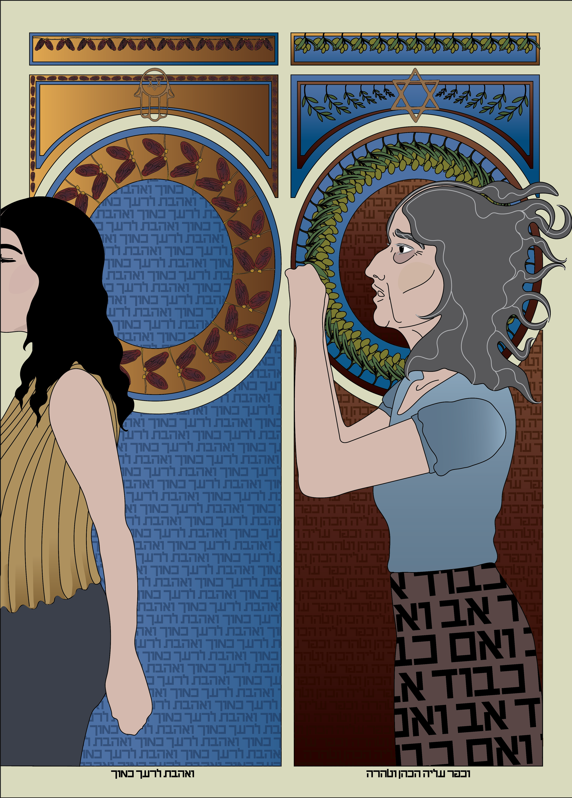
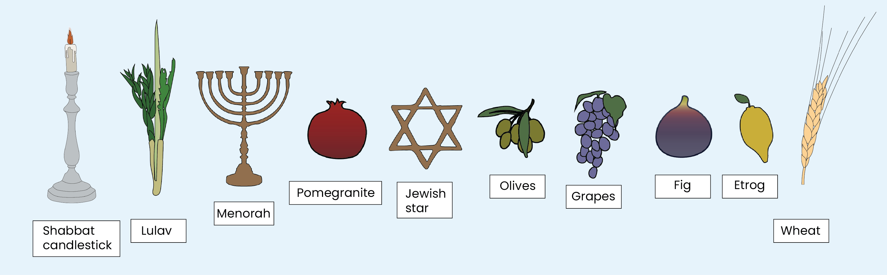
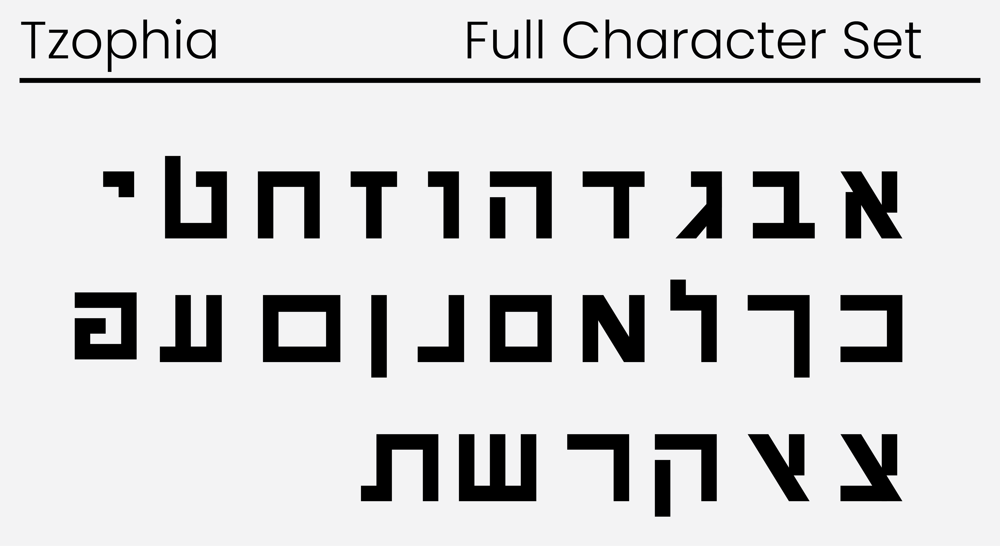

Respect Thy Mother
Poster Design
October 2020
18"x24"
Respect Thy Mother is an illustrative aspect of my undergraduate thesis project, focusing on the intersection of mother-daughter relationships and inter-generational trauma. This portion of the project strove to enlighten viewers to the effect that religion plays in maintaining patterns of abuse, particularly in patriarchal religions.




